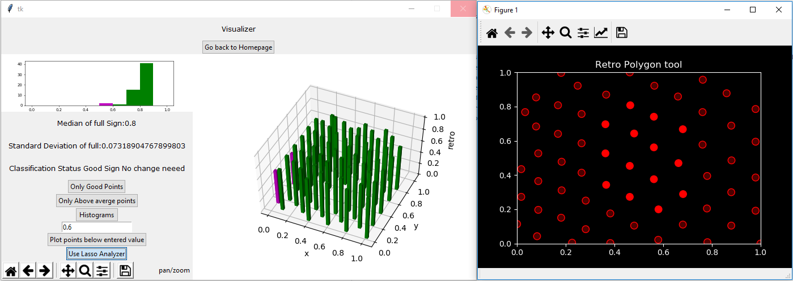
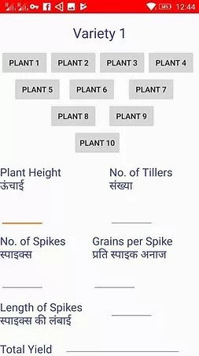
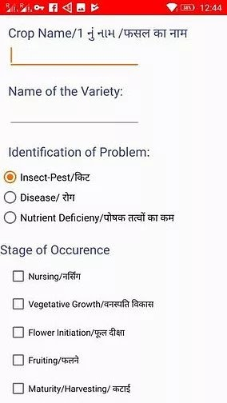
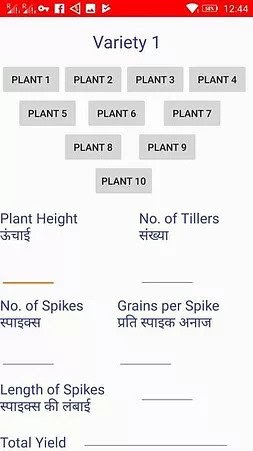
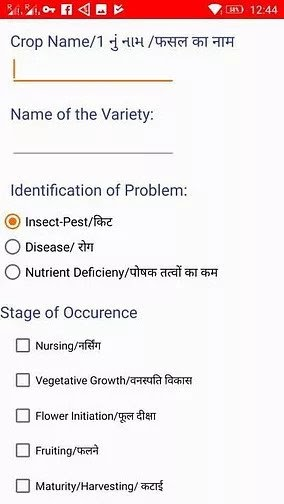
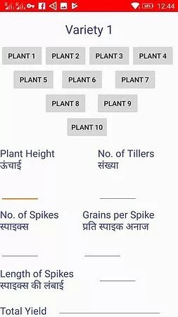
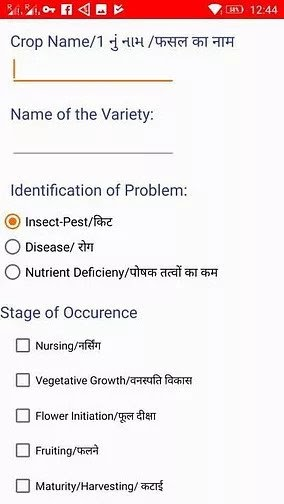

A selection of my UX research, Product Design and Software Case Studies.
AstraVerse | A UX Case Study Exploring How Cultural Spaces can inform Character Design
Religion and culture are an integral part of human evolution.
It is important to factor religion and culture while designing systems and video games.
In this UX case study we explore how Mixed Methods UX research of Cultural Spaces can inform the design of new game mechanics.
Facebook Home 2.0 | A Generative UX Case Study exploring Opportunities for Facebook's home.
As part of my summer internship at Meta, I executed a foundational generative study to explore design opportunities for Facebook Home. In this section, I present innovative research methods I developed during this internship. I refrain from sharing outcomes since they are under NDA.
Abric | A UX Case Study Exploring design spaces for Online Fashion Stores
Fashion is an important aspect of daily life. Digital fashion stores have taken the world by storm. In this case study, we explore pain points in current online fashion stores and propose an innovative interface and gamified system for Fashion shopping.
Move. | A UX Case Study for designing Robotic Managment Systems
In this case study we use UX reserach methods to unfold the process of Robot development, deployment and managment for various stakeholders.
Post that we design and present and solution to help stakeholders overcome various problems we identified as part of the explorative reserach.
Chemistry is thought across the world. But the access to platforms and technology (AR/VR) to visualize and help in memorizing chemistry concepts is limited to few first world countries. We Introduce a cross platform 2D mobile game. Which helps students to learn, visualize and memorize concepts.
Captain Bhor our male protagonist or Captain Madame Curie our female protagonist move around various Zones in a story built carefully to align with chapters in the textbook or concepts in chemistry. For example, a level beside the sea shore would discuss about Sodium, Magnesium Salts, their reactions.
Each Zone has games built to strengthen memory and visualization of the concepts involved.
Chemistry is one of the core subjects when it comes to preparation for Graduate school. Students between the age of 12-16 undertake chemistry classes for preparation of their SAT, JEE, ICho and other competitive examinations. Certain areas in the subject involve a component where a student has memorize a lot of concepts. There have been studies statistically measuring what percentage of students find chemistry hard and also their reasons. This project/research aims to address the reasons. This research proposal aims to use gaming as a modality to blackuce the negative affinity towards chemistry.
Sense.
The rise in Online education and Distance Education
has taken a toll on Physical Fitness and Physical Training Education.
Staying at home also increased screen time for students. We explore ways
to use screen time of students to indulge them into physical fitness. We use
game motivational models to allow users develop intersts towards fitness based games.
Traffic sign condition assesment using 3D LiDAR point clouds.

This project was finished under Dr. Yi-Chang (James) Tsai at GeorgiaTech, Atlanta. The project is completley sponsored by Georgia Deapartment of Transportation. This project deals with establishing a mathematical relation between the collected point clouds from LiDAR data and provide insights in the form of condition assesment, retro-intensity peaks. The project has been finished and is open source can be found at Github link . This visualization project has played a critical contribution for GeorgiaTech's and GDOT's win at https://research.transportation.org/sweet-sixteen-2020/. This open source tool developed by me allows reserachers to study LiDAR points to great precisions and visualize it. It allows to users to select clusters of points, indvidual point an provides statistics of the selected LiDAR points. These tools help in understanding the quality of traffic signs. For the entire Internship duration I have recieved an A grade from GeorgiaTech and Dr. Yi-Chang James Tsai.
Open Player Modelling and Player Analytics
playParallel is a game designed to help undegraduate students undertand the concepts of operating systems and parallel programming.
The Game involves threads (arrows) moving in specificed paths with objectives of delivering certain resources to certain destinations. The user is requrired to place semaphores and
link them with signals to allow all the arrows complete their tasks. This is an analogy to how there is a need to distribute resources among processes in a computer.
The sample space for possible spatial settings of the board is huge. This makes it challenging to compare player board traces and show important solutions to struggling students.
Leading the abstraction team I developed a zone based abstraction bringing the sample down greatly. This allowed us find common states between users and direct players to simillar board states for students who went on to solve the level.
Nitya.
The project came into life addressing, the ever growing sexual abuse across the globe. Mobile applications which were thought to prevent the problem came into rise but they neve took off. 'Nitya' is a computer vision solution developed on the prinicples of HCD. It is a vest with computer vision modules attached to it. It allows the user to capture and inform people when they feel unsafe. It covers all corner cases such as no network connectivity. This project was an award winner at hackathons and has been filed for a patent.
Patnet Number (filed): 201911005811
Rapid Pest Control and Field Analysis Application.


Rapid Pest control and field analysis application
The project involved in developing android applications for the farmers of Gujarat, to treat pest infestation by providing an easy and yet informative medium of communication between agriculture scientists at the National Innovation Foundation and farmers trying various seeds and new practices. This project was widley appreciated and covered in the media for the amount of impact it had on the local farmers. This project was part of my internship with Dr.Anil Kumar Gupta at IIM-A, NIF India and SRISTI UNICEF.
MiTRA and MiTRi : Your Robot Friends.
Mitra Means Friend in Sanskrit. With the rise in the pandemic, we identified that isolation of patients causes a toll on their mental helath. Apart form that the proximity doctors and nurses get to treat the patients, puts them at high risk. To address this, we equipped out Robot with Autonomus navigation capabilities and on board medical devices which allow the robot to interact and collect data from patients.
COVID19: RoboDoc and C-Astra.
Astra stands for "weapon" in Sanskrit. As a Research Engineer at Invento Robotics, I was part of building Navigation and Computer Vision algorithms for C-Astra and RoboDoc. These robots were built as soon as the pandemic broke loose. Today these robots are deployed across multiple hospitals across India and performing operations ranging from patient screening, thermal checkups, patient interactions, food and medicine delivery and area disinfection. This project is creating a positive impact on how frontline workers are dealing with the pandemic. Major Contributions from my side include:
Developing ROS Nodes for Navigation.
Developing analytics and metrics for Robot Performacne.
Developing a custom tele-communication (webRTC) portal for patients and doctors which can perform diganosis through AI by collecting data from on board pulse-oximeters and other medical equipment.
Images to Graphs via Signals.
Cricket is an integral part of India. After discussion with cricket coaches across India, we identified the need of a scientific method to generate analysis and structure data in cricket. We developed an image processing and computer vision based approach to segment cricket matches into events and generate graphs. These graphs have shown potential to allow coaches to perform queries over them and extract the required data.
Unlike football which is run based on clubs, cricket is played to a great extent at both international and league stages. For example Players from Australia and India in the same team in a league, suddenly become arch rivals while representing their countries. There is a lot of knowledge sharing which happens when players play together and against each other. We look to capture such patterns and help coaches to pick right
teams against the opponents and help players improve against certain rivals.
Human In The Loop.
Human in the Loop Systems have seen a great rise in the recent years. With fast changing environments and different dilects, autonomus conversation and navigation is still a far stretch for humanoid robots. To counter this and increase the engagement of robots with humans, we built a server supported portal to enable HITL. This allows the robot manager (doctors, owner, students etc) to take control over the robot and enage in conversations with patients, guests.
Feel free to log on to fleetui.mitrarobot.com to drive robots around and enage in conversations with people!
Semi-Autonomous Robots for brick field workers and Computer Vision based Border Survellience.
This project was developed to counter the growing back pain in female brick field workers, who carry hevey weights on their skull and forehead.
There is computer vision module which allows the live streaming of data and identification of popular construction sight material.
The innovative design allows easy maneuver of the bot with hevey weights on various difficult terrains for humans to move around.
The application of the bot is not just restricted to constuction sights can also be used counter terrorism operations and medical emergencies on battle fields.
Building robots is generally considered expensive. We built this entire project at a cost of $150. This allows it to be used more extensively.
Unlike regular robots, which are dicyclic or bipedal, to counter tough terrains and navigate over bricks and rocks, we use the NASA inspired Martian Rover design.

.png)


.jpg)
.png)
.jpg)
.jpg)
 



.png)
.jpg)
.jpg)


.jpg)
.jpg)
.jpg)
.jpg)